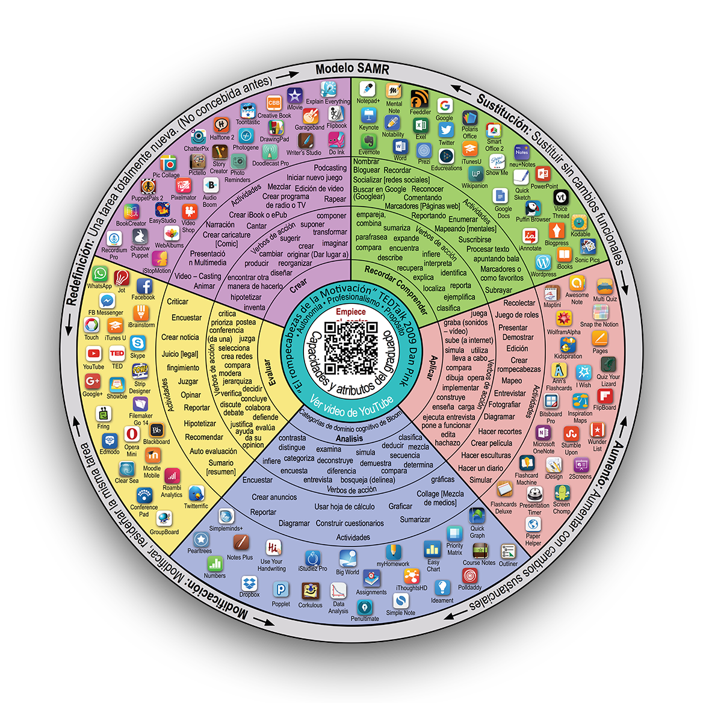

Nuevas Tecnologías en Educación Musical
Justificación pedagógica
¿En qué nos basamos?
La justificación pedagógica se basa en la "Rueda de la Pedagogía" de Allan Carrington, que relaciona las aplicaciones educativas con la Taxonomía de Bloom. Esta rueda promueve el uso de tecnología para facilitar el aprendizaje activo y centrado en el estudiante, y se estructura en torno a los niveles cognitivos de recordar, entender, aplicar, analizar, evaluar y crear.

Actividad 1
Niveles de Bloom: Recordar y entender.
El chatbot se ha programardo para proporcionar información básica y responder preguntas frecuentes, ayudando a los estudiantes a recordar y entender conceptos fundamentales de la tecnología musical. Esto libera tiempo de clase para actividades más interactivas y profundas, apoyando un aprendizaje autónomo y personalizado.
Actividad 2
Niveles de Bloom: Analizar y aplicar.
Usar aplicaciones que permitan a los estudiantes investigar y luego presentar sus hallazgos en un formato interactivo fomenta la aplicación de conocimientos en nuevos contextos y el análisis de cómo se han desarrollado las tecnologías musicales a lo largo del tiempo. Esto puede involucrar la creación de líneas de tiempo interactivas o presentaciones multimedia.
Actividad 3
Niveles de Bloom: Aplicar y crear.
Al permitir que los estudiantes usen herramientas digitales para crear música, esta actividad aplica sus conocimientos musicales en la práctica y fomenta la creatividad. Los estudiantes pueden experimentar con diferentes sonidos y estructuras musicales, potenciando su comprensión y habilidades en la composición musical.
Actividad 4
Niveles de Bloom: Evaluar y crear.
Compartir creaciones musicales en una plataforma pública permite a los estudiantes evaluar su trabajo y recibir comentarios de otros. Esto no solo aumenta la motivación, sino que también les enseña a evaluar críticamente su propio trabajo y el de sus compañeros, una habilidad esencial en el aprendizaje continuo.
Actividad 5
Niveles de Bloom: Evaluar.
El uso de una aplicación que revise los contenidos abordados permite a los estudiantes consolidar sus aprendizajes y demostrar comprensión. La creación de la aplicación les desafía a sintetizar y evaluar la información aprendida.
Obra publicada con Licencia Creative Commons Reconocimiento Compartir igual 4.0